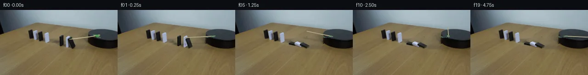

![首帧]()

Round 00
2026-11-05T01:05:32.954973+00:00像素候选变化代码 +380/−0inspection 更新
pixels 4f756e28e6afec89 · code 3c0ca1b4655bf6be
查看本轮 generate.py 真实 diff
--- previous/generate.py
+++ current/generate.py
@@ -0,0 +1,380 @@
+"""Deterministic local pixel continuation; no external model or render engine."""
+from pathlib import Path
+import json
+import math
+import numpy as np
+import cv2
+from PIL import Image, ImageDraw
+from artifact_io import save
+
+ROOT = Path(__file__).resolve().parent
+S = 4
+W, H = 256, 144
+SRC = np.asarray(Image.open(ROOT / 'first_frame.png').convert('RGB'))
+AX = np.array([0.66, 0.145])
+BY = np.array([0.73, -0.40])
+CZ = np.array([0.0, -1.0])
+CAM = np.array([0.73, -0.66, 0.37])
+CAM /= np.linalg.norm(CAM)
+YY, XX = np.mgrid[:H, :W]
+TOP = ((XX - 230.0) / 39.0)**2 + ((YY - 54.5) / 12.0)**2 < 1.0
+FOOTPRINT = ((XX - 231.0) / 40.0)**2 + ((YY - 72.0) / 13.0)**2 < 1.0
+
+DOM = [
+ dict(name='inner_black', origin=np.array([130.0, 79.0]), width=7.0, thick=3.0, height=20.0,
+ start=0.67, duration=0.45, initial=0.0, final=90.0, white=False),
+ dict(name='middle_white', origin=np.array([143.5, 82.0]), width=8.0, thick=3.0, height=22.0,
+ start=0.42, duration=0.62, initial=0.0, final=82.0, white=True),
+ dict(name='nearest_black', origin=np.array([155.0, 85.0]), width=8.5, thick=3.0, height=22.0,
+ start=0.14, duration=0.63, initial=27.0, final=79.0, white=False),
+]
+
+
+def poly_mask(points, pad=0):
+ m = np.zeros((H, W), np.uint8)
+ cv2.fillPoly(m, [np.round(points).astype(np.int32)], 255)
+ if pad:
+ k = 2 * pad + 1
+ m = cv2.dilate(m, np.ones((k, k), np.uint8))
+ return m
+
+
+def make_clean_plate():
+ """Remove only moving props, their old shadows, and the old arm attachment."""
+ m = np.zeros((H, W), np.uint8)
+ polys = [
+ [(130,59),(136,55),(139,57),(139,77),(134,81),(129,80)],
+ [(142,60),(147,56),(152,57),(153,81),(147,84),(142,83)],
+ [(147,63),(154,59),(157,61),(165,80),(161,86),(156,88),(149,83)],
+ [(122,66),(130,63),(139,75),(145,83),(135,88),(120,81),(118,75)],
+ [(138,74),(153,77),(166,83),(166,90),(148,91),(133,85)],
+ ]
+ for p in polys:
+ m = np.maximum(m, poly_mask(p, 1 if p is polys[0] else 0))
+ # Erase the narrow photographed arm and its table shadow.
+ cv2.line(m, (148,65), (212,57), 255, 4)
+ cv2.line(m, (145,79), (191,73), 255, 4)
+ hub = poly_mask([(201,54),(211,52),(219,55),(219,60),(212,62),(202,61)], 0)
+ m = np.maximum(m, hub)
+ table_m = m.copy()
+ table_m[TOP] = 0
+ table_m[XX >= 192] = 0
+ plate = cv2.inpaint(SRC, table_m, 5, cv2.INPAINT_TELEA)
+ # Add nearby real grain to the locally reconstructed wood, without disturbing
+ # the wall, left dominoes, or platform boundaries.
+ donor = SRC[np.clip(YY + 34, 0, H-1), np.clip(XX - 6, 0, W-1)].astype(float)
+ grain = donor - cv2.GaussianBlur(donor, (0,0), 1.0)
+ feather = cv2.GaussianBlur(table_m.astype(float)/255, (0,0), 0.7)
+ feather[table_m == 0] = 0
+ plate = np.clip(plate.astype(float) + grain*feather[...,None]*0.45, 0,255)
+ # The arm crosses the gray top disk. Fit a smooth surface from unobstructed
+ # neighboring pixels instead of importing tan table color into the disk.
+ disk_rgb = np.stack([54 - .10*(XX-208) - .25*(YY-54),
+ 63 - .11*(XX-208) - .25*(YY-54),
+ 68 - .10*(XX-208) - .30*(YY-54)],axis=2)
+ noise = SRC.astype(float) - cv2.GaussianBlur(SRC.astype(float),(0,0),1)
+ disk_rgb += np.clip(noise,-1.0,1.0)*0.25
+ disk_m = (m > 0) & TOP
+ plate[disk_m] = disk_rgb[disk_m]
+ # Extremely small areas at the top-disk edge remain dark side material.
+ side = (m > 0) & ~TOP & (XX >= 192)
+ plate[side] = SRC[np.clip(YY[side],0,H-1), np.clip(XX[side]+17,0,W-1)]
+ plate = np.clip(np.round(plate),0,255).astype(np.uint8)
+ return plate, m
+
+PLATE, ERASE = make_clean_plate()
+
+
… diff truncated; 293 more lines …